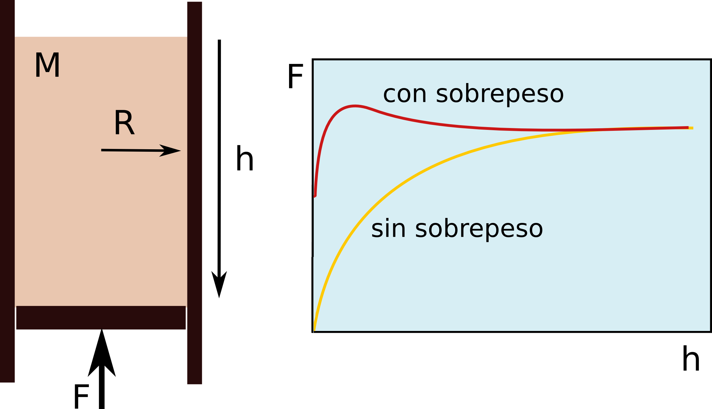
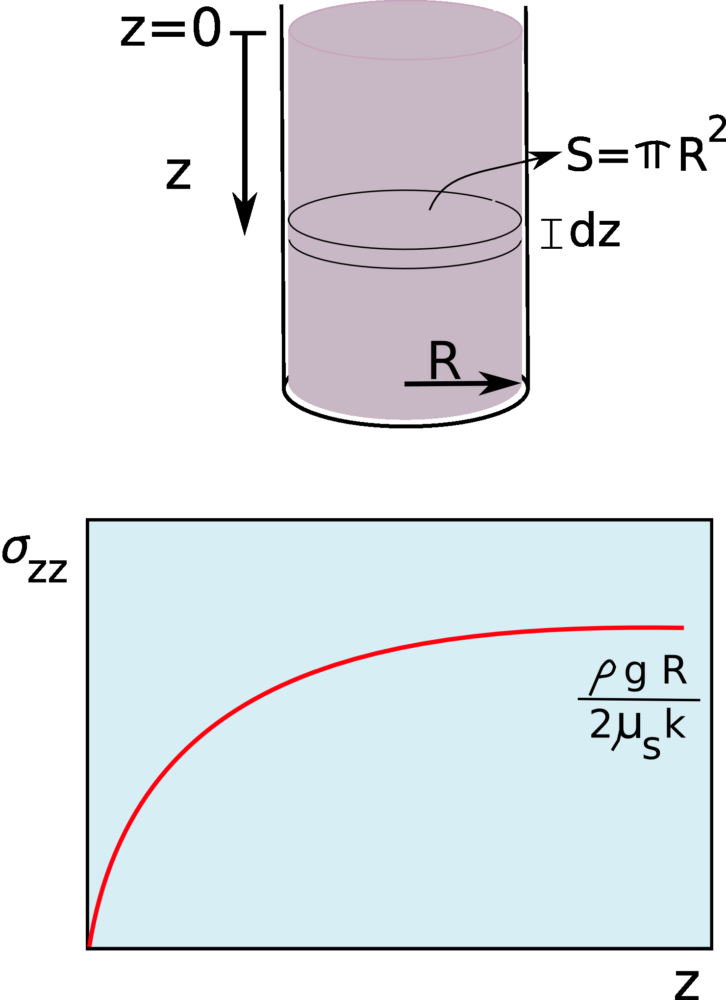
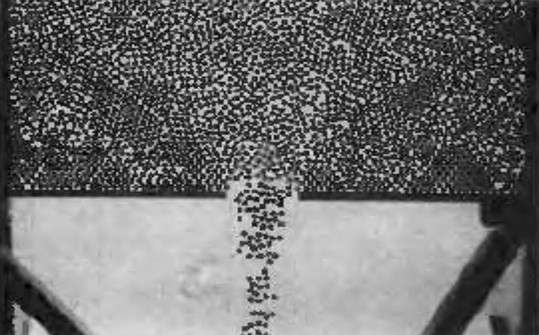
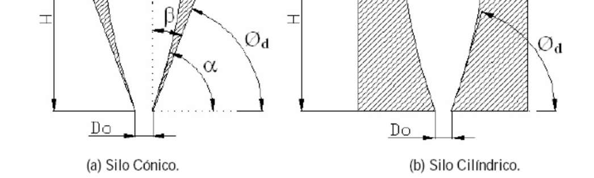
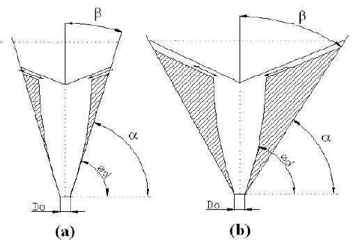
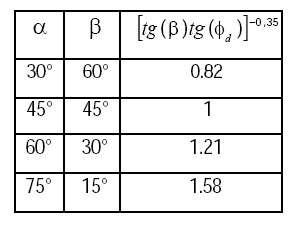
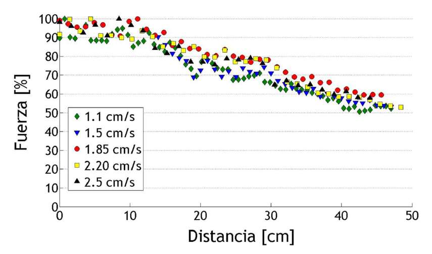

CLASE 3 - GEOFISICA DE MEDIOS GRANULARES
THOMAS GALLOT,
CAMILA SEDOFEITO
Instituto de Fisica,
Facultad de Ciencias,
Universidad de la Republica

En un fluido, la presion crece linealmente con la profundidad (ley de Pascal):
En un silo granular, la fuerza en la base satura:
Balance de fuerzas sobre una rebanada de espesor \(dz\) en un silo cilindrico de radio \(R\):
Hipotesis:
Ecuacion diferencial resultante:
con \(\sigma_{zz}(z=0)=0\). La solucion es:

Reescribiendo la solucion de Janssen:
Presion de saturacion:
\(P_{\text{sat}} = \dfrac{\rho g R}{2\mu_s K} = \dfrac{\rho g D}{4\mu_s K}\)
Longitud caracteristica:
\(\lambda = \dfrac{R}{2\mu_s K} = \dfrac{D}{4\mu_s K}\)
Para \(z \gg \lambda\), la presion se vuelve independiente de la altura.
Experimentalmente, la masa aparente de saturacion es proporcional a \(R^3\), consistente con \(\sigma_{zz} \to \frac{\rho g R}{2\mu_s K}\).
| Parametro | Descripcion | Valor tipico |
|---|---|---|
| \(K\) | Coeficiente de Janssen (redireccion) | 0.5 -- 0.8 |
| \(\mu_s\) | Coeficiente de friccion grano-pared | 0.3 -- 0.6 |
| \(\lambda\) | Longitud caracteristica | 5 -- 15 cm |
| \(D\) | Diametro del silo | 4 -- 6 cm (lab) |
Diferencia fundamental:
Fluido: \(P = \rho g h\) (crece linealmente)
Granular: \(P \to P_{\text{sat}}\) (satura exponencialmente)


El caudal masico \(W\) en silos es constante e independiente de la altura de llenado (a diferencia de la ley de Torricelli para fluidos).
Esto es consecuencia directa del efecto Janssen: la presion en el fondo satura.
Concepto de "free fall arch":
La velocidad de salida se fija por la caida libre sobre el diametro de apertura:
\(v = \sqrt{g\,D_0}\)
Beverloo, Leniger y Van de Velde (1961) midieron \(W^{2/5}\) vs. \(D_0\) y obtuvieron una recta:
\(C \approx 0.58\), \(k \approx 1.4\), \(D_0\) = apertura, \(d\) = diametro de grano
El termino \(kd\) se asocia a efectos de borde: zona anular cerca del orificio donde la densidad de particulas es menor (efecto de "anillo vacio").
Condiciones de validez:
Caso 2D (ranura): el exponente cambia de 5/2 a 3/2
\(W \propto \sqrt{g}\,(D_0 - kd)^{3/2}\)

Silo conico (a) y cilindrico (b): zona de estancamiento y orificio \(D_0\).

Un empaquetamiento denso debe dilatarse antes de poder deformarse por cizalla: los granos necesitan "trepar" unos sobre otros para moverse.
Comportamiento bajo cizalla:
Ejemplo cotidiano: arena mojada en la playa parece "secarse" cuando la pisas — la dilatancia crea vacíos que succionan el agua de la superficie.
La cizalla obliga a la capa superior a "escalar" sobre la inferior, aumentando la altura.
Duran, Sands, Powders, and Grains (1999), §3.1.3, p.63–67; Andreotti et al. (2013), §4.2.
Modelo de capas paralelas:
Dos filas de discos entre paredes. Bajo cizalla, la fila superior se desplaza y debe montar sobre la fila inferior.
El ángulo \(\psi\) = ángulo de dilatancia: mide cuánto se expande el material bajo cizalla.
Relación entre fricción microscópica y macroscópica:
En el estado crítico (\(\psi = 0\)):
El ángulo de dilatancia \(\psi\) conecta la fricción microscópica con la resistencia macroscópica del material granular.
Andreotti, Forterre & Pouliquen, Granular Media (2013), §4.2, eq. 4.2.
Cuando la apertura \(D_0\) se reduce, el flujo puede detenerse por formacion de arcos estables de particulas sobre el orificio.
Relacion critica \(D_0/d\):
La probabilidad de atasco \(J(D_0/d)\) se mide repitiendo la descarga muchas veces para cada apertura.
Diagrama de jamming (Liu-Nagel, 1998):
Tres ejes controlan la transicion flujo/atasco:
Diagrama de jamming de Liu & Nagel (1998).
El punto J marca la transicion de atasco.

Caudal constante: granos descargando a traves de un orificio.
Los arcos son estructuras autoestabilizantes donde cada grano se sostiene mutuamente por friccion y geometria.
Reloj de arena con granos finos (\(d < 300\,\mu\)m):
En el regimen intermitente, el gradiente de presion del aire atrapado entre camaras estabiliza los arcos temporalmente:
Cuando se agita una mezcla de granos de diferentes tamanos, los granos grandes suben a la superficie.
Mecanismos propuestos:
Nota: agitar un medio granular segrega en vez de mezclar -- lo opuesto a un liquido.
Segregacion acero/vidrio/malta -- T. Gallot, 2021
Una pila granular tiene un angulo maximo de estabilidad \(\theta_{\max}\). Cuando se supera, se produce una avalancha hasta que el angulo se reduce a \(\theta_{\min}\).
Dos angulos criticos:
\(\Delta\theta = \theta_{\text{start}} - \theta_{\text{stop}} \approx 3°\text{--}5°\) para arena tipica.
Regimenes en un tambor rotatorio (velocidad \(\omega\)):
Histéresis: \(\theta_{\text{start}} > \theta_{\text{stop}}\).
Valores tipicos: arena ~35 y ~30.
Laboratorio:
Geofisica:
La fisica es la misma: competencia entre gravedad y friccion interna.
El criterio de Mohr-Coulomb gobierna ambos casos:
Factores que desestabilizan una ladera:
El agua es critica:
Un poco de agua estabiliza (puentes capilares, castillos de arena).
Mucha agua desestabiliza (presion de poro, licuefaccion).
Saturacion de presion y friccion con las paredes en silos
Objetivo: Demostrar que la presion en el fondo de una columna granular satura con la altura, a diferencia de la presion hidrostatica.
Materiales:
Procedimiento:
Resultados esperados:
\(M_{\text{ap}}(h) = M_{\text{sat}}\left(1 - e^{-h/\lambda}\right)\)
Demo impactante: Llenar un tubo estrecho, insertar un tarugo como piston e intentar empujarlo. La friccion Janssen genera una fuerza enorme!
Descarga granular a traves de un orificio
Objetivo: Medir el caudal masico de granos a traves de un orificio, verificar la ley de Beverloo y demostrar que el caudal es independiente de la altura de llenado.
Materiales:
Procedimiento:
Resultados esperados:
\(W = C\,\rho_b\,\sqrt{g}\,(D_0 - kd)^{5/2}\)
Comparacion con fluidos:
Torricelli: \(Q_{\text{fluido}} = A\sqrt{2gH}\) (depende de \(H\))
Beverloo: \(W_{\text{granular}} \propto (D_0-kd)^{5/2}\) (no depende de \(H\))
Conexion con Exp. 1: La independencia de \(H\) es una consecuencia directa del efecto Janssen.
Clase 4: Cadenas de fuerzas y redes de contacto
Bibliografia: Andreotti et al., Granular Media -- Cap. 3